| |
TPR's Scandinavia Trip
Copenhagen Sommerland Sjaelland Bakken Tivoli Gardens Bon Bon Land
Hansa Park Legoland Billund Djurs Sommerland
Tivoli Friheden Farup Sommerland Tusenfryd Liseberg Skara Sommerland
Grona Lund Power Park
Sarkanemmi
Linnemaki
 All right. Sadly, the time has come. It's the last day of the trip, and as such, we're at our last park. Linnemaki. So let's just try and make this the best park day ever!!!
All right. Sadly, the time has come. It's the last day of the trip, and as such, we're at our last park. Linnemaki. So let's just try and make this the best park day ever!!!
 The good news is that park gave us LOTS of morning ERT, starting out with Vuoristorata, the park's scenic railway.
The good news is that park gave us LOTS of morning ERT, starting out with Vuoristorata, the park's scenic railway.
"Have fun you guys!!!"
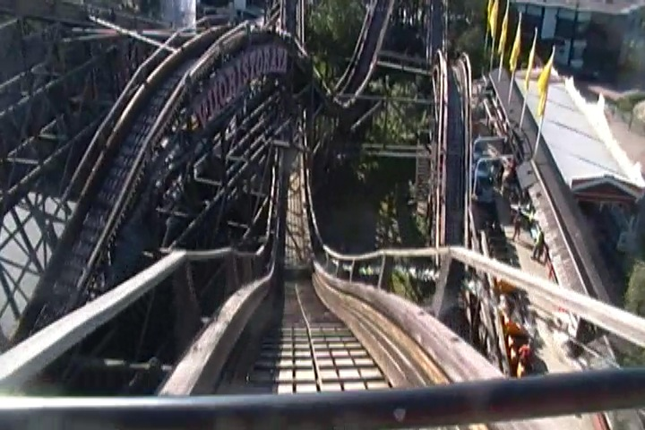
Hard to believe that on this trip, we've now ridden 3/5 of all the Scenic Railways in the world.
 You better watch out here, for there's some SERIOUS ejector air on that hill right there.
You better watch out here, for there's some SERIOUS ejector air on that hill right there.
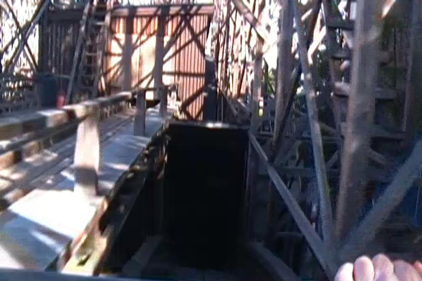
Bah, I've been spoiled by Bakken's tunnel. This bores me now.
 Moving on with ERT, we now go to Ukko for some fun.
Moving on with ERT, we now go to Ukko for some fun.
I already love the theme that Ukko is running with.
 For those who don't know, Ukko is one of those Sky Loops. Finally, I've been wanting to ride one of these for a long time now. =)
For those who don't know, Ukko is one of those Sky Loops. Finally, I've been wanting to ride one of these for a long time now. =)
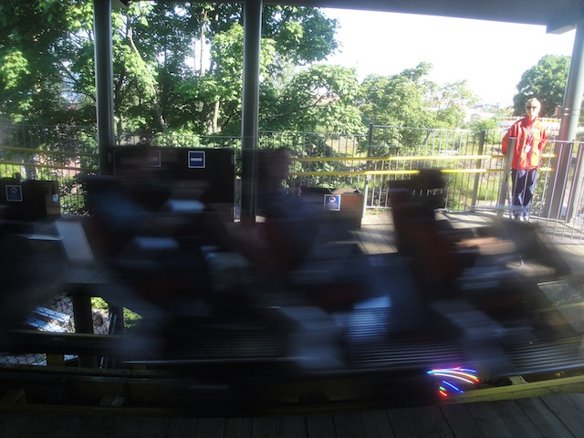
How's it going train.
 It was a fun ride and all. It actually kind of reminded me of Full Throttle in a way.
It was a fun ride and all. It actually kind of reminded me of Full Throttle in a way.
 Some of you may be wondering how the hell Full Throttle and the Sky Loops are similar. Well think about it. A Sky Loop is basically just Full Throttle without the launch and some of the curves in a compact space. Let's look at the checklist. Hangtime from a super high inversion. Check. One big drop. Check. Shuttle Section. Check. Stop way up at top. Check. Twisty Spiralish Inversion. Check. It's basically Full Throttle. Hey SFMM, you could've just gotten this and kept Log Jammer as well as your stupid roller coaster record. ;)
Some of you may be wondering how the hell Full Throttle and the Sky Loops are similar. Well think about it. A Sky Loop is basically just Full Throttle without the launch and some of the curves in a compact space. Let's look at the checklist. Hangtime from a super high inversion. Check. One big drop. Check. Shuttle Section. Check. Stop way up at top. Check. Twisty Spiralish Inversion. Check. It's basically Full Throttle. Hey SFMM, you could've just gotten this and kept Log Jammer as well as your stupid roller coaster record. ;)
 Love the view from the top of the lifthill of these Sky Loops.
Love the view from the top of the lifthill of these Sky Loops.
 Most original statue in the world.
Most original statue in the world.
 ERT continues on with their spinning coaster, Salama.
ERT continues on with their spinning coaster, Salama.
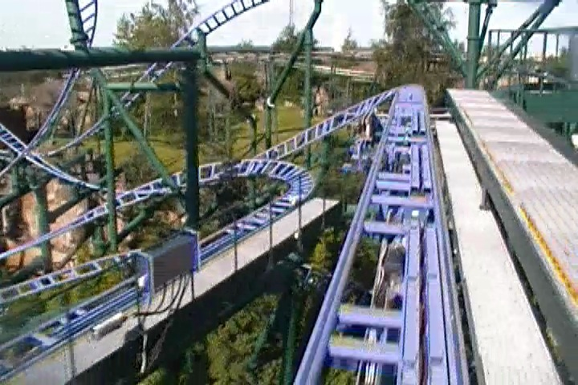
It was fun and all, but definetly one of the tamer spinning coasters I've ridden.
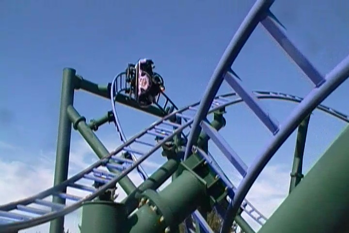
Hey, at least it's a fun twisted mess that certainly looks nice over Helsinki.
They even gave us ERT on their newest ride, Kingi, which is yes. A Mach Tower.
How the hell does Busch Gardens Williamsberg have so many problems with theirs when these Finnish parks can run their Mach Tower just fine.
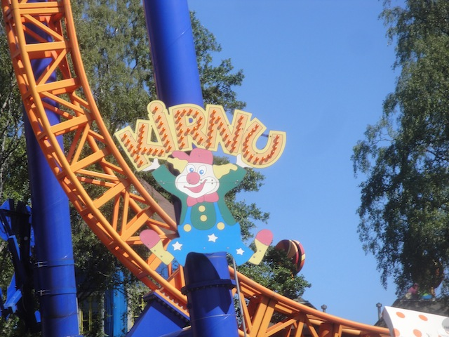
And finally, we also have ERT on Kirnu.
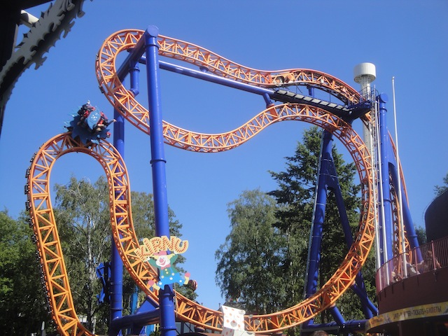
Kirnu is one of the smaller original Zac Spin models, or as I like to call it, Baby Insane.
 Hey, it may not be Insane, but at least it's possible to get a good flip on it unlike Green Lantern.
Hey, it may not be Insane, but at least it's possible to get a good flip on it unlike Green Lantern.
 Just need the Zac Spin in Spain and then I'll have the entire collection. =)
Just need the Zac Spin in Spain and then I'll have the entire collection. =)
Ooh. Kirnu Shadow Shot.
"Hmm, being forced to hold a monorail track with just your finger for no pay? I guess those Finnish jobs just aren't all what they've been cracked up to be."
Be on the lookout for seagulls before they take your food and sh*t on you.
Ok, what the hell is everyone lining up for?
Not only are they lining up for this kiddy ride, but they're counting this as a credit. ARE YOU F*CKING SERIOUS!!?
Look, I get the whole notion of counting pseudo-credits and double-tracked coasters as 2, but this is taking desperation to whole new levels.
"SAD AND PATHETIC!!! ALL OF YOU!!!"
Nobody will be spared from my wrath of public shaming.
While you losers humilate yourself on the kiddy dark ride (Seriously, you might as well count Peter Pan @ Disneyland as a credit if that counts), I was out enjoying myself on this relatively fun flat ride.
Aww, its a baby Chaos. It's so cute.
Ooh. Space themed line. This can only mean one thing.
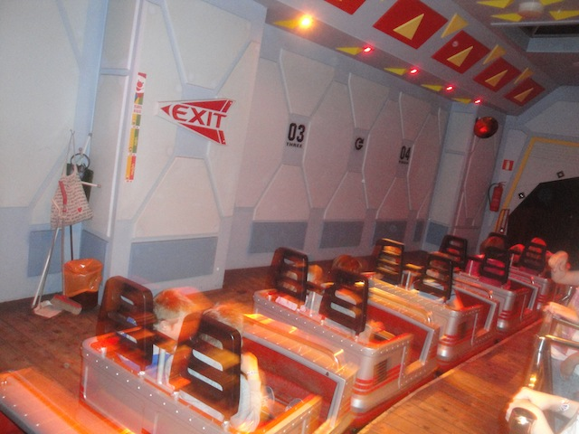
Yep. It's time for us to ride their Space Mtn knock off!!! And yeah, it was fun.
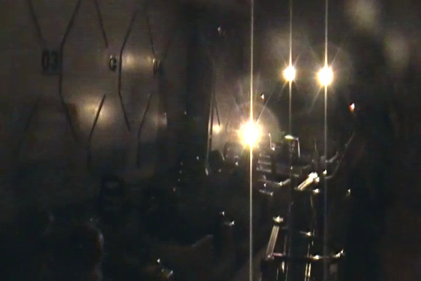
LIGHT SPEED!!!!
All right. Moving onto the rest of the credits (so glad we got all the low capacity credits during ERT), we now move onto Tulireki.
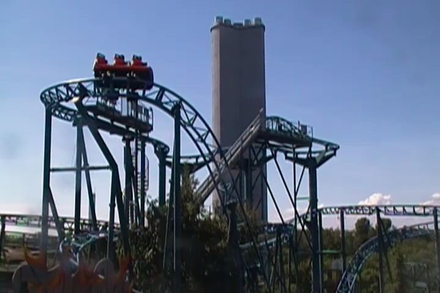
Tulireki is one of those Mack E-Motion Coasters, or as I like to call it, Pointless: The Ride.
 Yeah. I am not a fan of this ride.
Yeah. I am not a fan of this ride.
I'd tell you guys to have fun, but this is not exactly the ride to shout that on.
 I may not be a fan of this ride, but in a way, I'm still glad I rode it as it's the only Mack E-Motion Coaster in the world (for good reasons), so at least I rode something unique.
I may not be a fan of this ride, but in a way, I'm still glad I rode it as it's the only Mack E-Motion Coaster in the world (for good reasons), so at least I rode something unique.
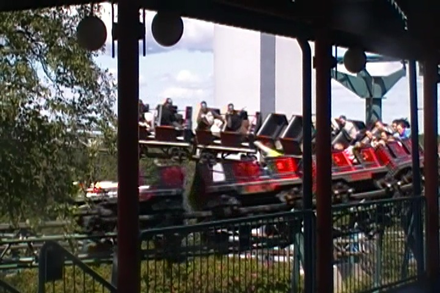
We had to stop at the powered pseudo-credit, so that the whores who count them can get their "credit".
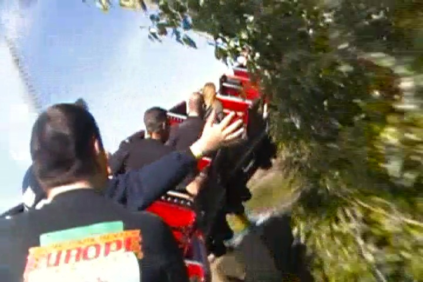
"Hey, as long as you don't count that kiddy dark ride, you have some respect from me."
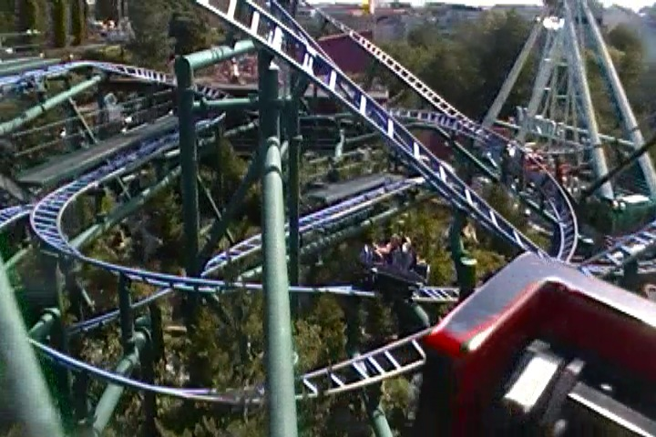
Salama from the powered coaster.
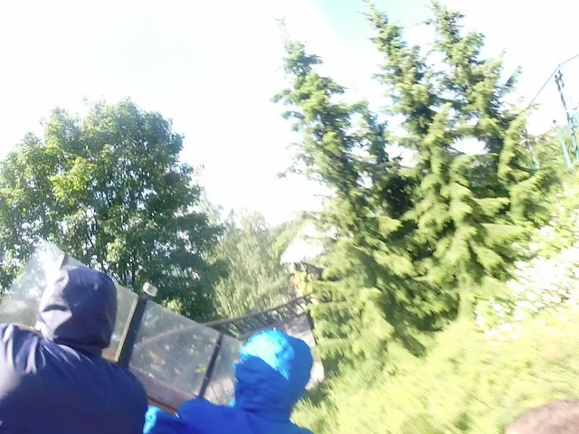
Just one last credit for us to get. The parks water coaster. And yes, this one counts as a credit.
 Hey, it may not be that great of a ride, but it WILL GET YOU WET!!!
Hey, it may not be that great of a ride, but it WILL GET YOU WET!!!
 SPLOOSH!!!
SPLOOSH!!!
Well, we're already soaking wet, might as well continue the trend and take a spin on their rapids ride.
"Hey look!! A chance for me to put my P2 Skills to good use. SIT DOWN!!! SIT DOWN!!! SIT DOWN!!!"
 Hows it going people on Salama!!
Hows it going people on Salama!!
 "If you think you can escape this ride without getting wet, then think again."
"If you think you can escape this ride without getting wet, then think again."
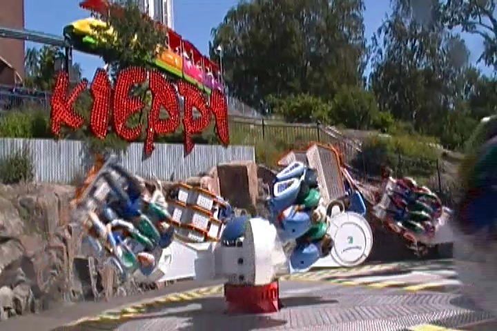
And now we move onto the parks star attraction. Kieppi.
 One of the best flat rides in the world. No joke.
One of the best flat rides in the world. No joke.
Knowing that Brooke was afraid of clowns, we HAD to do the clown themed dark ride just for her.
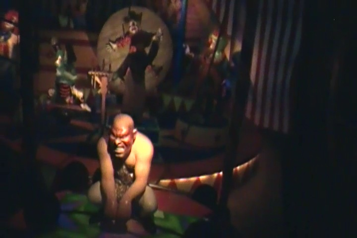
Just a dude picking up his balls here. Nothing to see.
"Hows it going Brooke!!?"
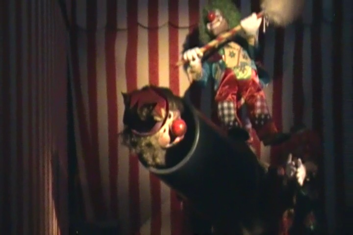
"Light the cannon and shoot these guys in the stratosphere!!!"
"Well, we have successfully scared the sh*t out of Brooke."
"Come on now. Don't be shy. Give your waitress a big old kiss."
 It's not the best lunch as this was just meatballs, but it was still good.
It's not the best lunch as this was just meatballs, but it was still good.
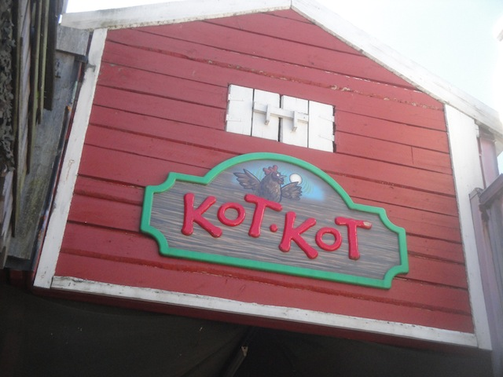
All right. Moving on, we head on over to Kot Kot, or as I like to call it, The Egg Ride.
Yep, you ride in an egg and learn how to count on this ride. We really don't belong here. =)
Count the cocks!! =)
Ooh. I like the Iphone themed to an old school tablet.
"I knew it!!! Rubber Ducks are secretly satanic!! I knew it all along!!! You thought I was crazy for being so vehemently anti-rubber duck!!! But look!!! Look!!! I was right!!! They're all evil!!!"
Ooh, I really like the Afro Fountains and am glad that they have one at Linnemaki.
I know many friends from this trip will be happy to see that this enterprise is LGBT-Friendly.
Don't worry. That fun house line isn't nearly as long as it looks.
If you ever find yourself lost, just follow the balls and you'll be fine.
Love these crooked rooms.
"Ugh. Losing my grip. Sorry people behind me. You better run before I fall."
Look out for the sudden stop at the bottom of the slide. >=)
 I had been told by many employees that on a clear day, you could see Estonia from the top of their observation tower. All right, let's test that theory.
I had been told by many employees that on a clear day, you could see Estonia from the top of their observation tower. All right, let's test that theory.
 Hmm, I see Helsinki and the Baltic Sea. But nope. No Estonia. Bummer. =(
Hmm, I see Helsinki and the Baltic Sea. But nope. No Estonia. Bummer. =(
 This should give you a good idea on how twisted the Salama layout is.
This should give you a good idea on how twisted the Salama layout is.
Hey people down there. Can you feel the tilt on the E-Motion Coaster or is it still pointless?
Aeriel shot of Kirnu
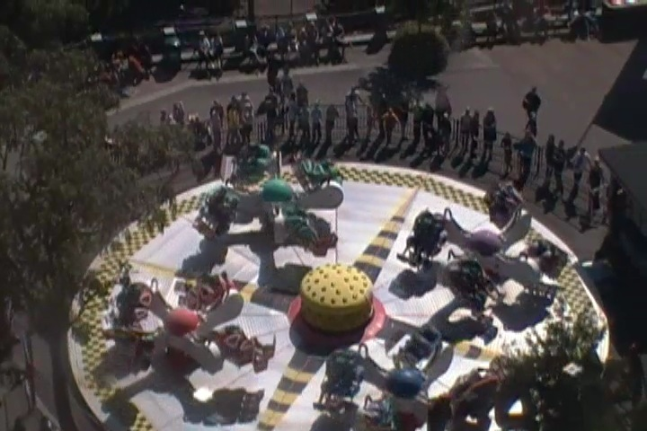
Kieppi from the observation tower.
Nice Flower Peacock you've got right there.
Aww. I miss Bon Bon Land now.
I really enjoyed the 3D Show of the Wile E Coyote Cartoon. Cause hey, the Loony Tunes are awesome.
The Space Shot here may not have been that powerful, but hey. Its still fun.
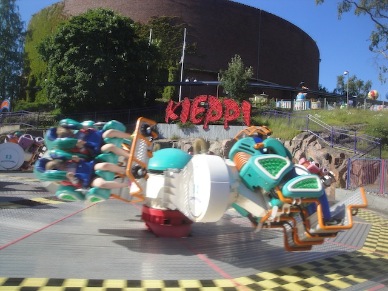
Still can't believe that this is the only Huss Booster in the world.
Love the setting of Linnemaki on the hillside in the middle of Helsinki.
The time has come for the farewell dinner.
 It was a very good dinner as we said good bye to everyone on the trip until next time.
It was a very good dinner as we said good bye to everyone on the trip until next time.
"I'm gonna miss all you c*nts. Well, except for you, you, and ESPECIALLY you."
All right. The trip is technically over and there are no more parks to visit. However, I went out with a small group of friends to go sight seeing that night in Helsinki and check out the touristy stuff and satisfy the travel bug in me and tell everyone that I've really been to Helsinki.
"We can re-build it. We have the technology."
Yay!!! I've found yet another Hard Rock Cafe!!! Cha-Ching. New Hard Rock Cafe Credit.
At the Helsinki Senate Square. Hey America!! This Senate actually gets sh*t done!!
Yep, we made it back to the port we pulled in for the Overnight Ferry with the Ferris Wheel.
Bonus trip to the Helsinki Zoo anyone?
Aww. I like those turtle curbs. Lets import these back to America.
Helsinki is a very interesting city. I know I've always said Scandinavia as a synonym for the Nordic Countries because...come on. It's much cooler to say "I'm going to Scandinavia this summer." instead of "I'm going to the Nordic Countries this summer." But after visiting Copenhagen and Helsinki in the same month, you can REALLY tell that Helsinki is NOT a Scandinavian city. I like Helsinki alot, but it does NOT have the same vibe that I got from all the Scandinavian cities.
"Hey, let me pop that bubble for you." =)
Fun fact. This is actually a cemetary (hard to tell from the photo) and people are out drinking, partying, and BBQing, just ignoring all the tombstones. Awesome. =)
And that's it folks. The Scandinavia Trip is now over and I flew back to Los Angeles the next day. I just want to thank Robb & Elissa for organizing yet another amazing trip, all the parks for treating us so wonderfully, and all the people on the trip for being such kick-ass people. It was definetly one of the best trips I've done and I'll always remember fondly of this trip.
Home
|